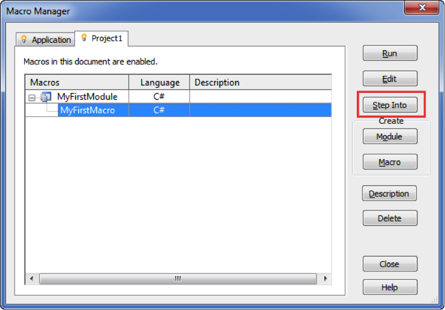

Revit Macro User Survey
Hello Experts,
Do you use Revit Macros in your projects?
The Revit development team would like to understand the use cases you need to achieve through Revit Macros.
We invite all Revit Macro users to take this short survey:
Thank you for helping us!
